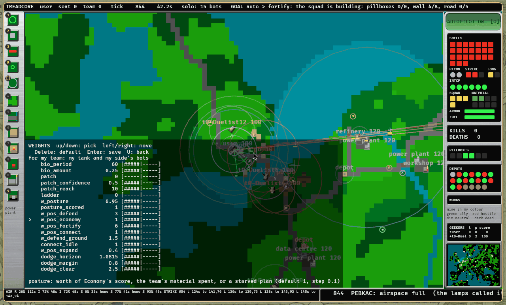
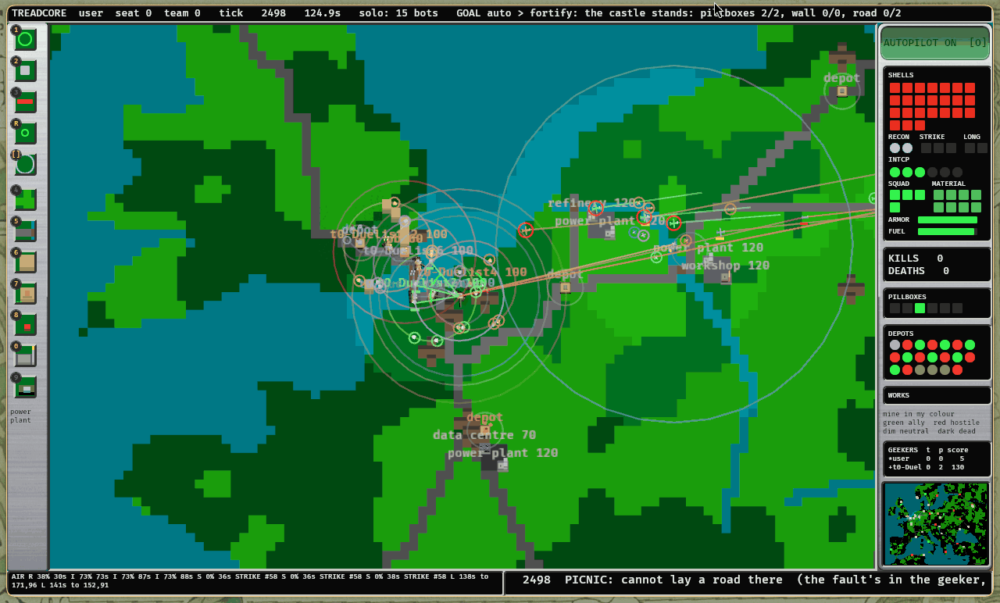
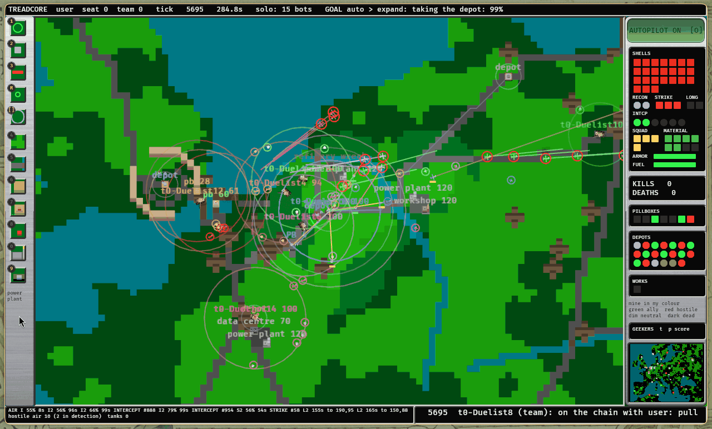

Abstract
A hand-written style read +18 points a seat on one map, and tracing it led to one number: w_pos_fortify, promoted at 6.0 under a game that no longer exists. Lowered to 0.4 it reads +3.65 +/- 0.62 over 400 seeds on all eleven maps, z 5.9, and the search could not have reached it. Paul said to do it, and to document what we were measuring. So the rules for accepting it were written before its breakdown was read. The result is a change made and a change refused. w_pos_fortify = 1.5 is on the line: +1.34 +/- 0.37 pooled, with kills less deaths unchanged. 0.4 is held, by our own rules: its whole gain is the reward for tiles walked, and with those rewards taken out it reads -0.30 +/- 0.41. Meanwhile it kills less, past two errors. Whether that trade is what the game should reward is Paul's call. The work also found and fixed four faults in the run, including one that had silently stranded two jobs.
Index Terms: pre-registration, sequential testing, reward design, parameter search, game AI.
I. What was asked
Paul, 1 November, on being told of the dial and that it changes how bots play:
"yes. please follow recomendations. DO it. Document what you are measuring. lab report about conclusions and changes."
II. What we are measuring, and the rules set before the results
Treadcore's working rule is "the rule before the run": write down what would confirm a change before reading it. These rules were written at about 14:20 on 1 November, while the held-out reads of w4970 (w_pos_fortify = 0.4) were still running. They are copied here unchanged, and the results follow in Section IV.
A. The instrument
| Measure | What it is | Where it comes from |
|---|---|---|
| d | Trial team's mean score a seat, less the other teams', per seed. A paired reading, so a map's luck mostly cancels | g-*.log, one seed played three times |
| se | Its standard error over seeds | pool.sh |
| z | d / se. How many errors from no difference | pooled.txt |
| Held-out read | The census on seeds from 60,000,000 up, never used to choose a trial | job h#### |
| Proof | The line against main, 800 seeds from 700,000,000 up | job pv#### |
| Family | A set piece with a floor: nine of them, 6,600 runs | every_family_holds_its_floor |
A seat's score is a sum, and one thing we want to know is which part moved:
| Part | In the score | Why it matters here |
|---|---|---|
| Combat | kills less deaths, a win, direct hits, pillbox damage | Does it fight better? |
| Ground | ground held, pillboxes and depots taken, defends | Does it hold more? |
| Going forward | tiles advanced (0.25 each), advance stages, tows | What this dial pays most, and what we must not mistake for skill |
| Works | built, road, bridges, castle time | What this dial may cost |
And the behaviour itself: seconds a team spends on each rung of the Auto ladder (fortify, turrets, hunt, expand), and the share of posture picks in each posture. These logs now name each reward, which they did not when this began.
B. The rules
R1, to join the line. w_pos_fortify = 0.4 joins by the ordinary road or not at all: past its held-out bar for that hour, every family at or above its floor, and all the brain's unit tests passing. No exception by hand, however good the earlier read.
R2, to reach main. The line must read z 3 past main, 800 unseen seeds, no map two errors under. Main does not move on anything less.
R3, to count as a real gain beyond the reward for walking. With tiles advanced and advance stages taken out of the score, 0.4 should still be above Fleet on all maps by more than two errors. If it is not, the honest conclusion is that this dial mostly collects a reward, and the report must say so, even with the change standing.
R4, what would make us take it back. Any of: a family under its floor; the line reading two errors under main at its proof; or combat clearly worse (kills less deaths past two errors below). Then it goes back by a person's hand or by an anchor at z 3.
R5, the Connect dial. connect_idle = 0 goes by the same road. Before it was measured here on two maps it read inside the noise. It is judged on all eleven at 400 seeds; it need only not lose, since it removes a score for work nobody can do. Below two errors, it stays at 1.
Not measured, and said now: whether the game is more fun or looks better. Bots that build less early are a change of character, and only a person playing can judge that.
One honest note on the timing. When these rules were written, the 400-seed total of +3.65 was already known; that is why the rules exist. Its breakdown into combat, ground and going forward was not, and no log yet itemised going forward. R3 and R4 were written blind to what they would find.
III. How it was run
| Read | Trial | Against | Seeds | Purpose |
|---|---|---|---|---|
r0090 | 0.4 | 6.0 | 400 | The total on every map |
r0091 | 1.5 | 6.0 | 400 | A nearer step |
h0351, h0352 | 0.4 | 6.0 | 400 each, held out | Its own unseen reads, by the road |
h0349, h0350 | 1.5 | 6.0 | 400 each, held out | The same for 1.5 |
r0097 | 0.4 | 6.0 | 220, itemised | R3 and R4 |
r0098 | 1.5 | 6.0 | 220, itemised | R3 and R4 |
h0354 | 0.4 | 1.5 | 400, held out | 0.4 carried onto the new baseline |
r0096 | connect_idle 0 | 1 | 400 | R5 |
Each is the census of Section II-A, on all eleven maps, on the fleet's machines. The itemised reads are the first with each reward named in the log, added for this report.
IV. Results
A. The dial's effect
| 1.5 against 6.0 | 0.4 against 6.0 | 0.4 against 1.5 | |
|---|---|---|---|
| The score, by census | +1.34 +/- 0.37 (pooled, 620 seeds) | +3.58 +/- 0.52 (pooled, 620 seeds) | +3.05 +/- 0.69 |
| Held-out reads | +1.06 +/- 0.50 and +0.22 +/- 0.48 | +3.80 +/- 0.67 and +3.64 +/- 0.62 | +3.05 +/- 0.69 |
| Without going forward | +0.36 +/- 0.31 | -0.30 +/- 0.41 | +0.25 +/- 0.30 |
| Kills less deaths, a seat | -0.05 +/- 0.05 (pooled) | -0.17 +/- 0.05 (pooled) | +0.03 +/- 0.07 |
| Built, team | -3.4 | -7.8 | -4.5 |
| Road, team | -1.5 | -2.2 | -0.8 |
| Ground held | +0.10 | +0.14 | +0.11 |
| Tiles advanced, team | +9 | +58 | +43 |
Fleet teams built about 15 on naval and 21 on europe, so 0.4 gives up something like half their works. Note 1.5's second held-out read: it is a modest change, and its gain is the less certain of the two.
B. Where 0.4's points came from
Multiply each measured change by what the score pays for it, per seat:
r0097, 220 seeds). The third row is what is left of the rewards and the score after the others, since hits, damage, pillboxes and ground are paid at several rates.Tiles advanced alone pay +2.89, and advance stages +0.66: together +3.55 of a +3.42 gain. Everything else nets to about nothing. Teams with 0.4 walk further, take a few more pillboxes, hold a little more ground, kill less and build far less.
C. By map
europe.europe still shows most, and without going forward it remains +4.6: on that one map a real part of the gain survives. It is 20 seeds of noise on each bar, so this is a lead, not a result.
D. The behaviour
| Share of a trial team's time on Auto's rungs | 1.5 | 0.4 |
|---|---|---|
| Expand | 48% | 64% |
| Fortify | 24% | 11% |
| Turrets | 6% | 3% |
| Defend the base | 18% | 16% |
From the itemised reads. So 0.4 does what it says: less castle, more going out.
What it looks like
Everything above is read from logs. On 1 November the game ran in a window on treadcore-vm, from main at 5c599f7, where the dial is still 6.0. One tank's goal line over the first six minutes on Europe, a team of Duelists against Raiders, from nine frames:
| Seconds | The goal line |
|---|---|
| 42 | fortify: the squad is building: pillboxes 0/4, wall 4/8, road 0/5 |
| 125 | fortify: the castle stands: pillboxes 2/2, wall 0/0, road 0/2 |
| 165, 205 | turrets: waiting for the squad |
| 245 | defend base: BASE UNDER THREAT |
| 285 | expand: taking the depot: 99% |
| 325, 365 | expand: gathering the fleet |
(At 85 seconds the autopilot lamp read off and there was no goal line.) This is the ladder of one tank, not the posture dial, so it does not measure the dial. It shows, in this one match, what the words "until the castle stands" look like to a person watching: about two minutes of building, and nearly five before this tank's goal turns to taking ground.

w_pos_fortify reads 6, the row below the cursor's. The line holds 1.5, and a person playing main plays 6 until a proof lands.
auto > fortify: the castle stands: pillboxes 2/2, wall 0/0, road 0/2.
auto > expand: taking the depot: 99%.V. Conclusions, rule by rule
| Rule | w_pos_fortify 1.5 | w_pos_fortify 0.4 |
|---|---|---|
| R1, held-out, families, tests | Passed: the road carried it as r0092 | Reads and families passed. Stopped by hand before the tests |
| R2, line z 3 past main | 94a99be, which holds 1.5, read +1.97 +/- 0.41, z 4.82 over 800 seeds, and main did not move, for a fault in the planner: see Section VI. An hour later d4002e5, the same values but for base_r 8, read -0.07 +/- 0.41 | Not met by the line as it stands. Main has not moved |
| R3, a gain beyond walking | Not shown: +0.36 +/- 0.31, inside the noise | Failed: -0.30 +/- 0.41 |
| R4, combat clearly worse | No: -0.05 +/- 0.05 | Yes: -0.17 +/- 0.05, z -3.1 |
1.5 stands, with a caveat: most of its gain is also rewards. 0.4 is held. R4 says take it back and R3 says it mostly collects a reward, so the rule written first decides, however good +3.65 looked.
The Connect dial stays at 1. connect_idle = 0 read +0.32 +/- 0.22: it did not lose, but it did not pass the road's first bar and it was not adopted. Kills less deaths read -0.07 +/- 0.03. So the road left it where it was. Teams still do not fill pillbox slots; this dial only changes what the posture thinks of that.
So was it a fault? Partly. The number was set for an older game, and Fleet does sit on its castle longer than today's game pays for. But most of the +18 we chased was the score paying for walking, on the map with the most to walk. The search was not hiding a much better brain. It was hiding a different trade.
The question this leaves for Paul
You asked for this reward: "reward massivly the forward advancmaent". So by the score you chose, 0.4 is better by more than three points a seat, past any bar we have. By kills and works it is worse. Our rules refused it, and they are ours to change: they say what we would accept as evidence, and only you can say what the game should reward. Three choices, each one number:
- Stay at 1.5. The safe choice, and where the run now stands.
- Choose 0.4 anyway, because forward play is what you want. Remove the line from
QUEUE/hold.json, and the road does the rest. - Reprice the walk. If 0.25 a tile is too generous now that the rest of the game has moved, change it, bump
GAME_VERSION, and read everything again. Then this dial will find its own level.
A playtest answers this better than any census:
printf 'w_pos_fortify = 0.4\n' > /tmp/fort.weights
treadcore --solo --autopilot --weights /tmp/fort.weightsVI. What changed
In the run, live now:
| Change | Where | Why |
|---|---|---|
w_pos_fortify 6.0 to 1.5, as generation 7 (r0092) | the line | Passed the road and R4 |
w_pos_fortify = 0.4 held | QUEUE/hold.json | Failed R3 and R4; its reads go on, it does not promote or carry |
In orrery's planner:
| Fault found | Fix |
|---|---|
A by-hand census could be stranded. A generation retired the build it waited on, and it sat high in the queue forever, with health saying "every queued job has a machine". r0093 and r0094 lost 20 minutes this way | A build a queued job waits on is kept |
A named style could promote itself. A census of bot_style = 1 that passed was adopted, and could have replaced every bot's brain. Two were adopted; neither reached a candidate | Named styles are never adopted, carried or promoted |
| An anchor could undo generations on noise (found the same day) | An anchor must clear z 3 |
| By-hand censuses on macmini read one map (the same) | The paste fix now covers them |
| A read taken to measure was adopted as if to promote | adopt=no on a census |
A passed proof could go nowhere. A proof takes a quarter of an hour, and at this pace a generation lands inside it. 94a99be read z 4.82, two more generations had landed, and the planner looked at the line's head, which had not been read, and pushed nothing | A passed proof puts on main the commit it read, and what came after waits for its own proof |
In treadcore (fcaadc3):
- The census log names every reward, so the next +18 explains itself.
- The dial
connect_idle, at 1 as built: no default moved.
VII. What this says about the search
It cannot see far. The fit's reach is one doubling, two when stalled. 0.4 was nearly four away, and it took hand-written styles from another week to point at it. After a game change, each dial should be read at a quarter and four times today. Nor does it look past the total: a gain made of one reward reads the same as a gain made of everything, and z 5.9 was reassuring right up until it was broken down. The new log makes this possible, and a candidate's report could carry it automatically.
What was built from this, the same evening
Paul said "continue. implimenting." Four changes, all in the planner and the fit, none in the game. Each is a number on Queue, Values, and each has a setting that returns to how it was.
| Change | Before | Now | What was checked |
|---|---|---|---|
| The fit remembers | Only reads on today's defaults: of 42 hours, the fit could use the last 0.4 | Older reads count as what they are, the trial's value less the value of its day, with error growing 0.5 a doubling of drift. Up to 6 doublings back, never across a game | Fit rows 65 to 400, live. Back-test below |
| One generation a half hour | Each as it passed, some 15 minutes apart | Not sooner than 30 minutes; what passes meanwhile lands together, each moving what the others do not | Checks only. It has not landed a batch yet |
| Looks far | One doubling, two when stalled | Under each new game, each of 118 dials at a quarter and four times, a quarter of each top-up: 236 trials, by the ordinary road | Started live under game 4 |
| No rebuild for documents | Each commit made seven machines build, and voided a running proof | Reports, docs, *.md and the two scripts that run only here go on main with nothing rebuilt or replayed. Builds go ahead of the queue | A real push of suggest.py left the fleet's commit where it was. Checks on real git for landing on main's documents |
What the memory said at once. With 65 rows, the fit's best was alpha at +1.19. With 400, alpha falls to +0.23, and the best is w_pos_fortify at 0.75, +0.78 +/- 0.27, and base_r back at 16, +0.16 +/- 0.11. This is a fit's opinion and not a read. The hold is on 0.4 exactly, so a trial near it goes by the ordinary road.
The back-test. The rule, before reading it: at each set of defaults with 20 rows or more, fit only older rows under the same game, and predict that set's rows. The memory earns its place if it beats saying nothing. It does, and it beats older rows taken uncorrected:
| Fit from older rows, 2,192 rows predicted | Weighted squared error left, of predicting zero |
|---|---|
| Corrected, the memory, at 0.5 a doubling | 0.44 |
| The same rows uncorrected | 0.47, and on one generation 2.6 times worse than predicting zero |
It is not a large gain where it matters. Most of that is big losses staying big: a dial that was terrible stays terrible. On the last six generations alone, it explained between -13% and +31% of what predicting zero left, near nothing on most. So it should mostly save the fit from re-reading what is known bad and from chasing a few rows, and I would not expect it to predict small gains well.
VIII. Threats and what is open
Pooled reads mix builds, since the line moved between them: r0090 and h0351 on one commit, r0097 and r0098 on another, each with the base set to 6.0 by hand in the later ones. The behaviour table has no column for 6.0, since the census logs a trial team's rungs and not the baseline's. R3 rests on 220 seeds, so its error is larger than the 400-seed reads'. Per-map bars are 20 seeds each. R2 has one read of the line with 1.5. The proof before these generations read +0.54 +/- 0.35. Nothing has reached main at this writing, so the pictures show 6.0. The last two proofs disagree, and I cannot say why. They differ by 2.04 +/- 0.58, z 3.5, lower on all eleven maps, and only base_r changed between them. Read directly, base_r 16 against the line is +0.03 +/- 0.39 over 400 seeds (r0102, on the line with escort off as well), so it does not explain the fall. Each proof's two jobs agree with each other, so the error within a proof looks honest. Either one read was lucky or something differs between them that I have not found. The four jobs pooled read +0.94 +/- 0.29. Do not quote +1.97 as the gain. 1.5 landed before its R3 and R4 reads were back, because the road moved first; had it failed R4, it would have been taken back by hand.
Open:
- Teams never fill pillbox slots: a tank must own the pillbox it carries, and the commander holding the plan rarely does. The real mend gives the job to the owner.
- The hold is a file with no button: Queue, Values could show it.
IX. Reproducing this
Q=~/code/treadcore/build/queue/grove
python3 tools/fleet-queue.py $Q new census "trial=w_pos_fortify = 0.4" "base=w_pos_fortify = 6.0" name=x seeds=220 adopt=no
python3 tools/report/fortify.py $Q r0097-00 # what its gain is made of
cat $Q/hold.json # what a person holds